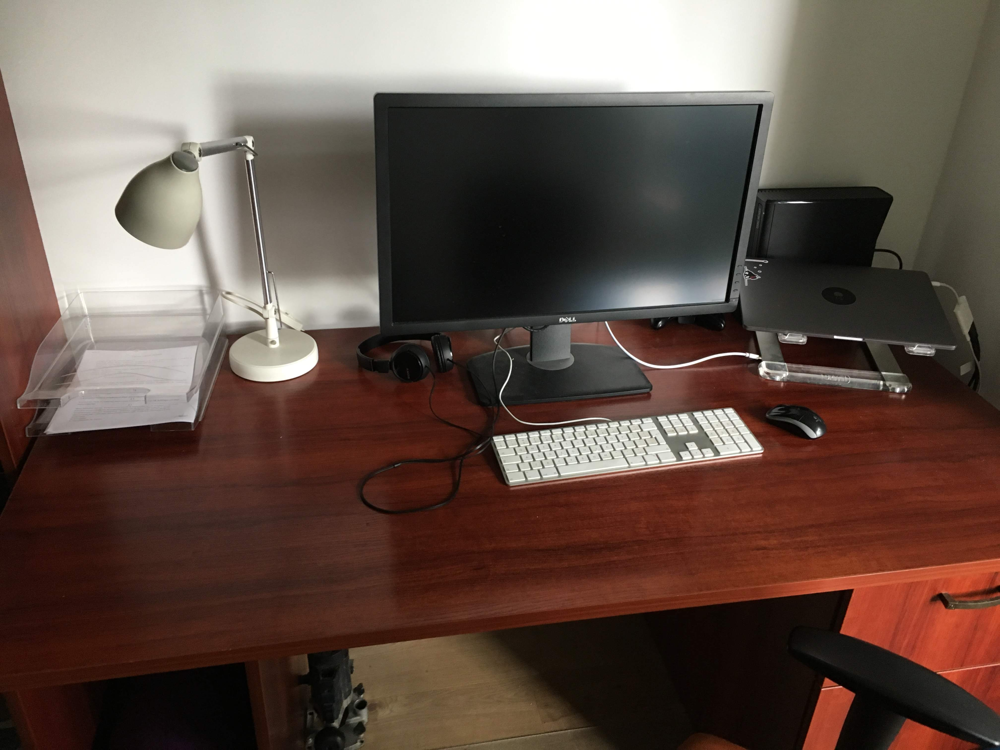
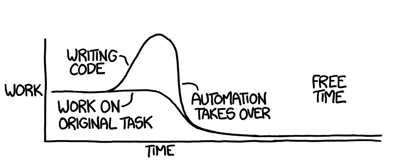
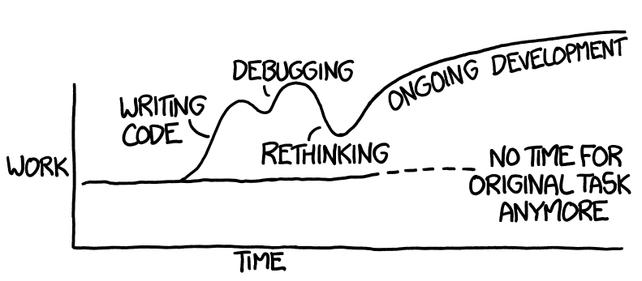
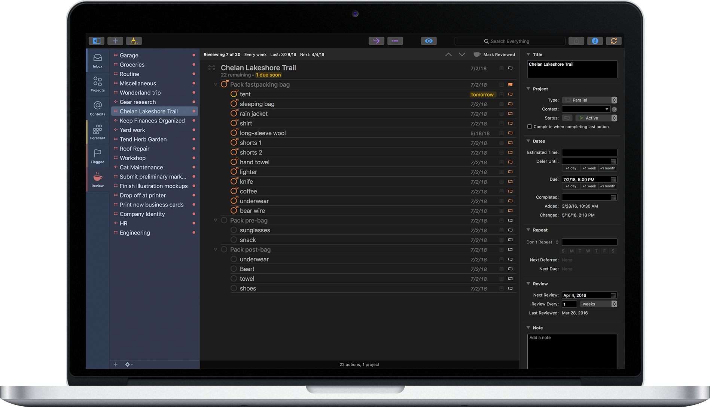

Jak być skutecznym
24 godziny na dobę?
Michał Lewandowski / @lewandm4
Disclaimer
Nie rozmnożysz czasu
- 24 godziny
- 1440 minut
- 86400 sekund
chyba, że ...
GeeCon 2013
Kim jestem?
Tryb: Normalny
| Czynność |
Czas |
| Sen |
56h |
| Praca |
45h |
| Rozwój |
14h |
| Rodzina |
11h |
| Kolacja |
10.5h |
| Sniadania |
9h |
| Higiena |
7h |
| Relaks |
5h |
| Obiady |
4h |
| Sprzątanie |
3.5h |
| Zakupy |
3h |
Kim jestem?

Zarządzanie czasem
"Nie zarządzasz swoim czasem"
Eliminacje
- Czy chcę to zrobić?
- Czy mogę to zrobić teraz?
- Czy zostawić to na później?
- Jak robie: Automatyzacja!
- Nie robię: Zapominam
Automatyzuj
Co?
Automatyzuj
Dlaczego?
Automatyzuj

Automatyzuj

Scrum
Delegacje
Zasada dwóch minut
Zasada "zupy instant"
Zasada autobusu
| Czynność |
Czas |
| Chodzenie |
2 minuty |
| Czekanie na autobus |
3 minuty |
| Jazda autobusem |
10 minut |
| Chodzenie |
2 minuty |
| Czekanie na tramwaj |
2 minuty |
| Jazda tramwajem |
8 minut |
| Chodzenie |
4 minuty |
Zasada GC w dokumentach

Zasada wejścia wyjścia

Odpoczywaj
Hibernuj
Prokastynuj
Czy to może zaczekać do później?
Czy teraz jest dobry czas, żeby to zrobić?
Zasada braku czasu
Nie mam na to czasu.
Nie zależy mi na tym.
Rodzina
Bloki czasowe
Kalendarz
Dziecko
Jak córka mnie zmieniła?
Czas do pracy!

Logiczne vs Emocjonalnie
Logiczne podejmowanie decyzji nie zawsze działa!
Bez telefonu
RescueTime
Blokowanie stron
Wstawanie rano
Wstawanie o wschodzie słońca
Model - 1D
Praca
Pomodoro
Lista zadań
Model - 2D
Covey
Ważne: Jak bardzo to się liczy?
Pilne: Kiedy to się liczy?
Priorytety
Nie znasz swoich priorytetów!
Model - 3D
Przykład z życia
Przykład z IT
Pytania
Ważne: Jak bardzo to się liczy?
Pilne: Kiedy to się liczy?
Znacznie: Przez jak długi czas będzie to będzie miało znaczenie?
Deepwork
Współbieżność
Trening
Skupienie
Rytuały
- Na monka
- Na wyjazd
- Rytmicznie
- Na deadline
Planowanie
Omnifocus

Znaj swoje cele!
Realizuj marzenia
Jaraj się
Bądź bohaterem swojego życia